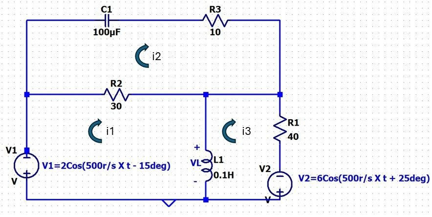

Question 3
You must use the Mesh Current Method to analyze the following circuit. You may assume the inductor is ideal (e.g. no series resistance). For conventions sake, use the mesh current names and directions shown in the circuit.

3A) Draw the Phasor Diagram replacing the components and source with the appropriate phasor representations ( use Cartesian coordinates)
Note: You are not required to enter any information into Canvas for 2A as it can't ingest graphics.
3B) Write the three raw mesh equations. Don't simplify or put in Matrix format yet, but be organized.
Note: You are not required to enter any information into Canvas for 2A as it can't ingest equations.
3C) Simplify the mesh equations and express in General Matrix format (AI = V) or a set of simplified simultaneous equations. Use Cartesians coordinates. Simplify does not mean solve the matrix, just reduce each matrix component to a number.
Note: You are not required to enter any information into Canvas for 2A as it can't ingest equations.
3D) Express the current through the 30 ohm resistor in terms of the mesh currents (ia, ib, ic). YOU DON'T have to solve the matrix, just use the variable appropriately.
3E) Express the Voltage drop across the inductor in terms of the mesh currents (ia, ib, ic). YOU DON'T have to solve the matrix, just use the variables appropriately and leave indicated.